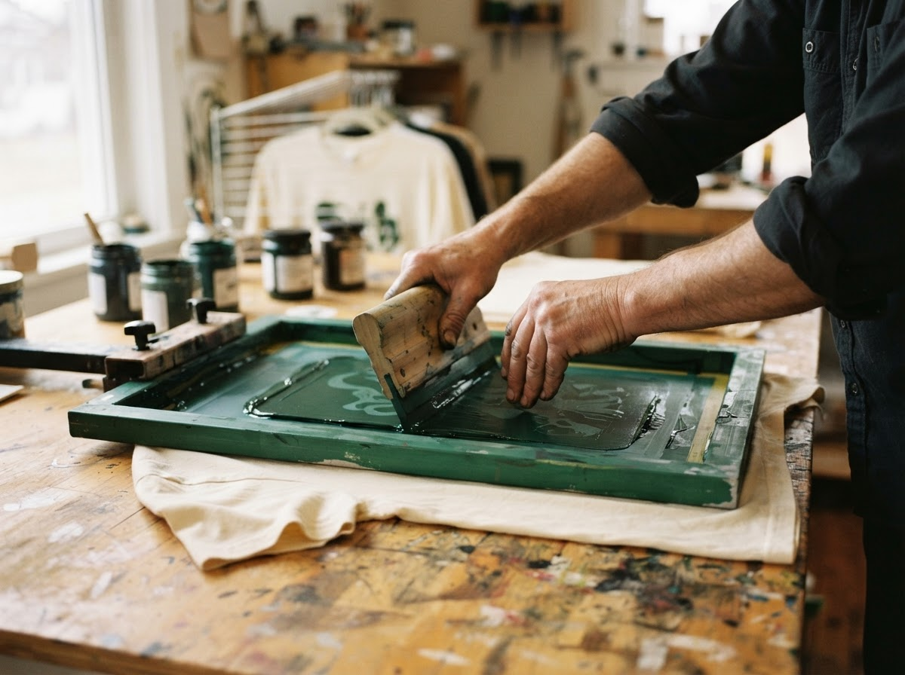

Cosas buenas, en su correo
Una nota desde nuestro taller: historias nuevas, ofertas de temporada y un poco de inspiración. Cuéntenos qué le interesa.

Elija sus intereses para que sepamos qué le importa. Puede darse de baja de los correos cuando quiera.
El nombre y el correo son obligatorios. Todo lo demás es opcional.
Chicago, Illinois
Camisetas personalizadas, hechas con cariño.